Visit Yellowstone and experience the world's first national park. Marvel at a volcano's hidden power rising up in colorful hot springs, mudpots, and geysers. Explore mountains, forests, and lakes to watch wildlife and witness the drama of the natural world unfold. Discover the history that led to the conservation of our national treasures "for the benefit and enjoyment of the people."
Mailing Address:
P.O. Box 168
Yellowstone National Park, WY 82190-0168
Phone:
(307) 344-7381
Recorded information and an option to speak with someone. For road information please dial 307-344-2117.
Yellowstone is at the northeastern end of the Snake River Plain, a great U-shaped arc through the mountains that extends from Boise, Idaho some 400 miles (640 km) to the west. This feature traces the route of the North American Plate over the last 17 million years as it was transported by plate tectonics across a stationary mantle hotspot. The landscape of present-day Yellowstone National Park is the most recent manifestation of this hotspot below the crust of the Earth.
Yellowstone National Park
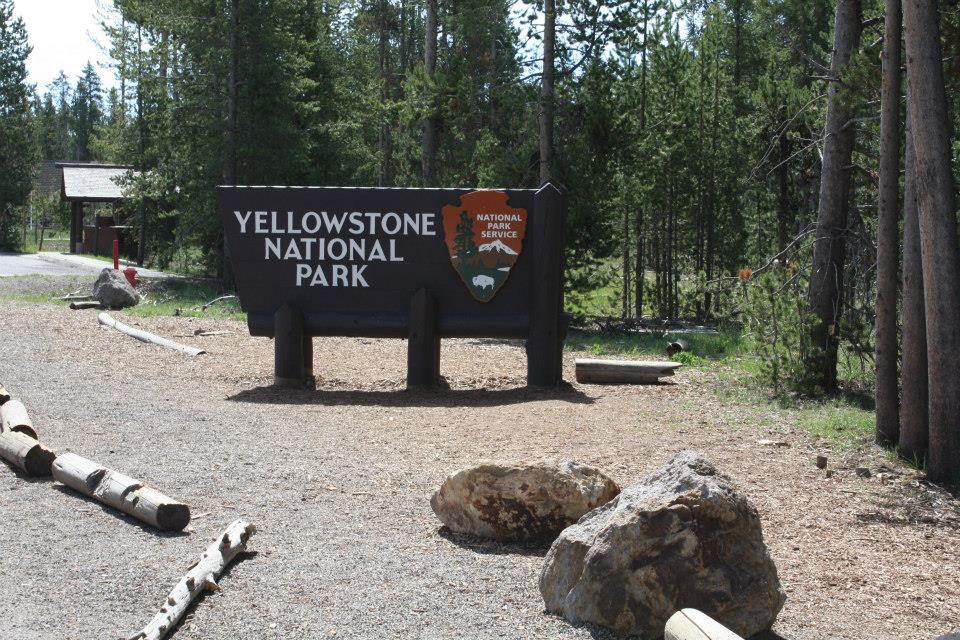
Yellowstone National Park
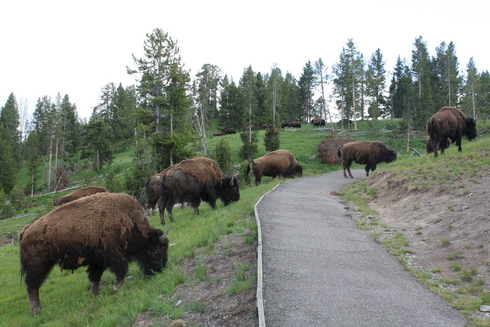
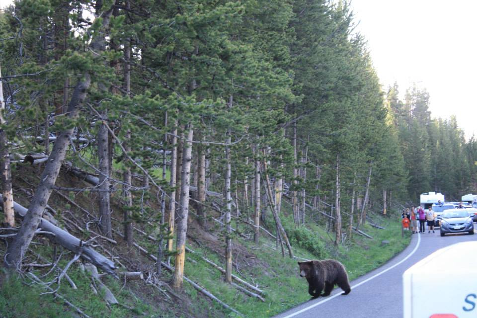
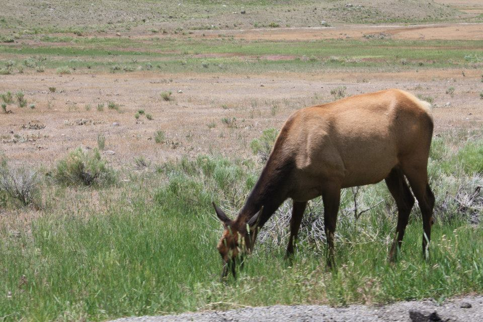
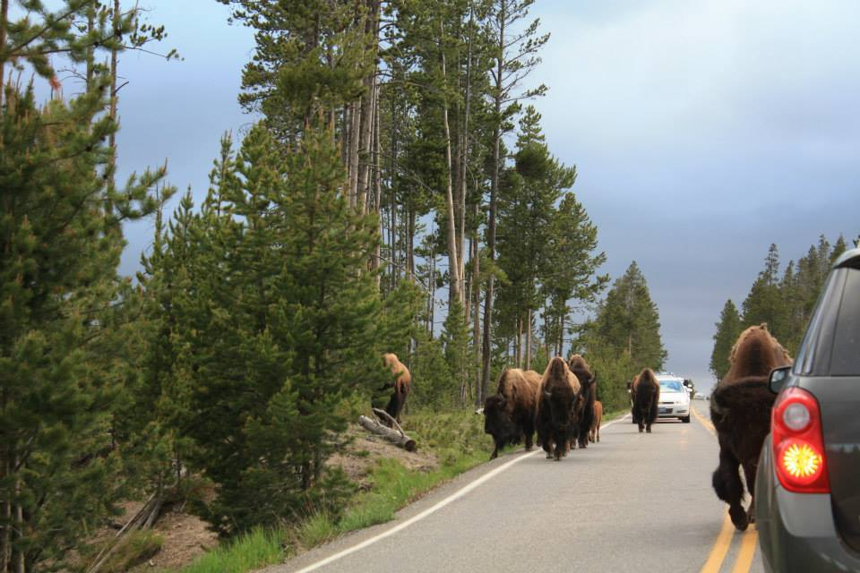
The first exploration was led by a party of US Army officers in 1849. The Mescalero Apache were already living in the area at the time. Hispanic families started farming communities in the area at Tularosa in 1861 and at La Luz in 1863.
Creating a national park in the white sands formation goes back as far as 1898. A group in El Paso had proposed the creation of "Mescalero" National Park. Their idea was for a game hunting preserve, which conflicted with the idea of preservation held by the Department of the Interior, and their plan was not successful.
In January 18, 1933, President Herbert Hoover created the White Sands National Monument, acting under the authority of the Antiquities Act of 1906. The dedication and grand opening was on April 29, 1934.
White Sands National Park
 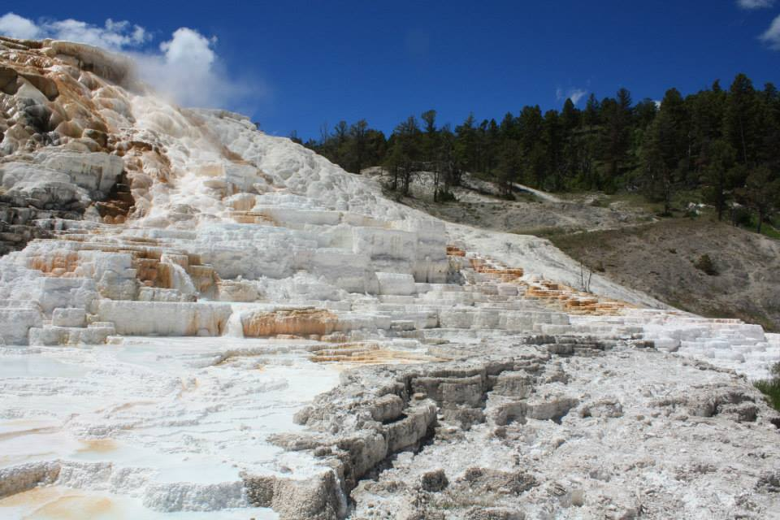
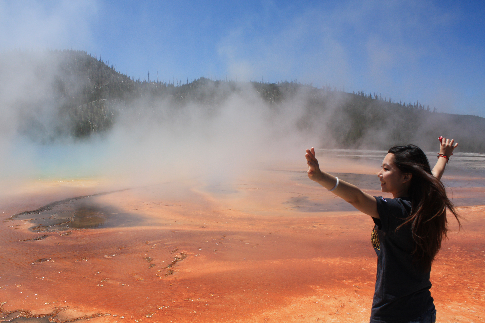
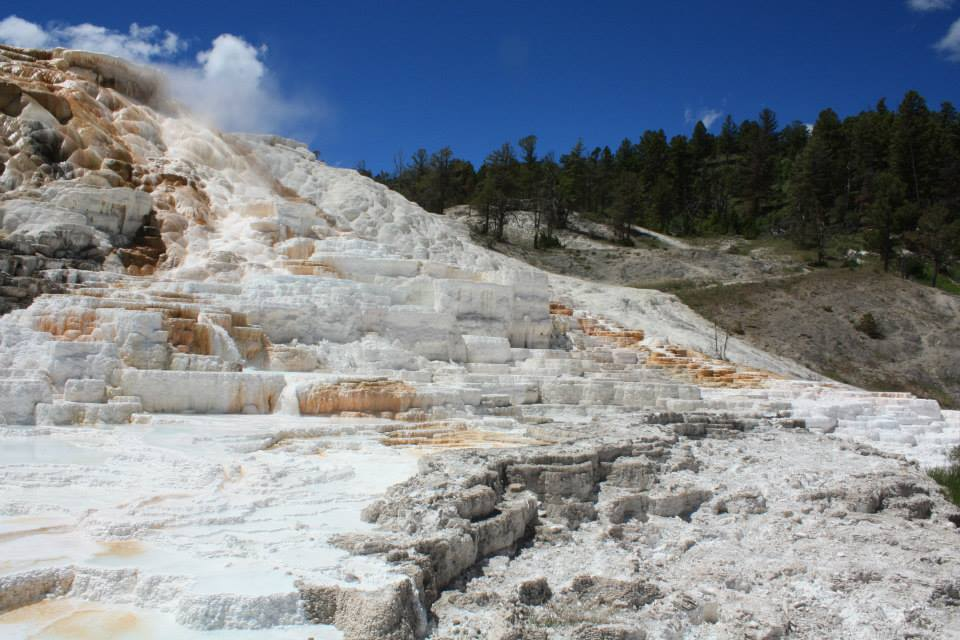
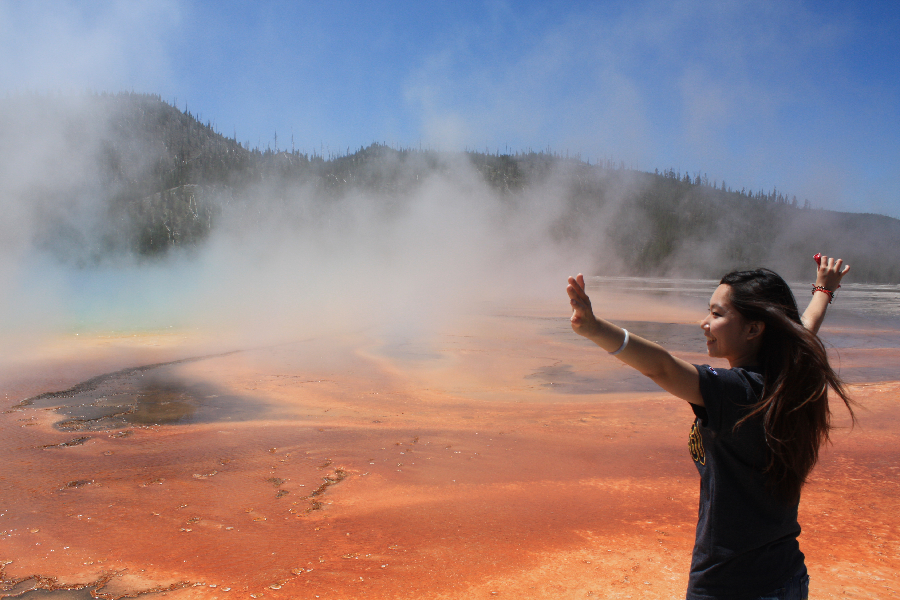

 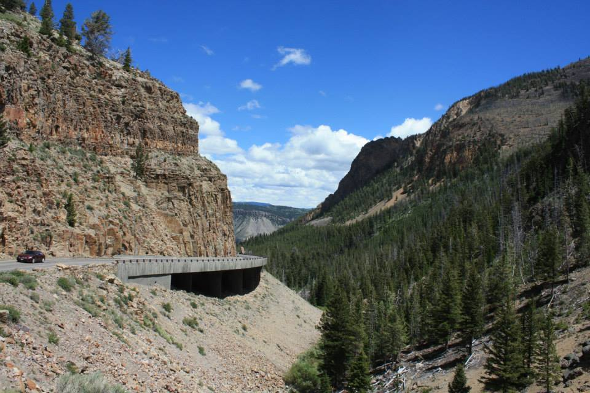
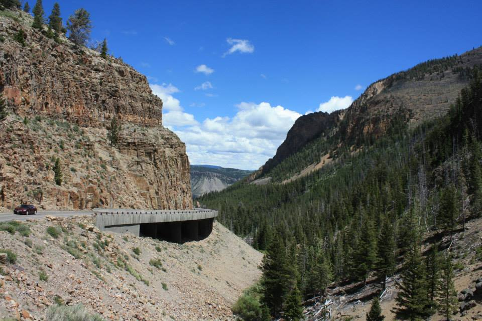